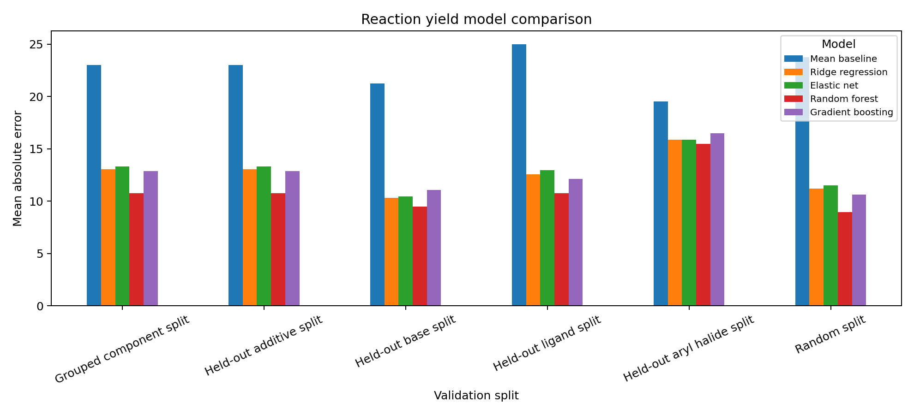

Cheminformatics and CADD
ChEMBL workflows, molecular descriptors, Morgan fingerprints, scaffold-aware validation, applicability-domain checks, and compound prioritization.
Computational chemistry · antibody ML · cheminformatics
I am a chemistry PhD candidate focused on molecular machine learning for antibody and drug-discovery data.
I build end-to-end Python workflows for antibody sequence curation, paired-chain representation, protein language-model embeddings, PyTorch and scikit-learn models, and validation across V-gene and source groups.
This site collects projects I've done throughout the years and experience I've gained.
ChEMBL workflows, molecular descriptors, Morgan fingerprints, scaffold-aware validation, applicability-domain checks, and compound prioritization.
Antibody sequence curation, paired-chain representations, k-mer baselines, protein language-model embeddings, source-holdout validation, and existing-record prioritization.
Public HTE reaction-yield records, component-label features, grouped validation, uncertainty diagnostics, and active-learning simulations.


Biologics
Public antibody sequence-record workflow with supervised k-mer baselines, IgBert and AbLang2 checks, source-holdout validation, OAS background retrieval, and existing-record ranking.
5,573 strict labeled records · grouped ROC-AUC 0.780 · OAS top-25 shortlist

Reaction informatics
Public Buchwald-Hartwig HTE benchmark with reaction cleaning, categorical component features, out-of-component validation, uncertainty diagnostics, and active-learning simulation.
3,955 public HTE records · additive-held-out R² 0.726 · Spearman 0.860
Added OAS existing-record ranking summaries and an unsupervised cached-embedding sequence landscape.
Consolidated the scaffold-validation, applicability-domain, triage, and redocking workflow into a public project page.
Packaged a public HTE benchmark with additive-held-out validation, uncertainty diagnostics, and active-learning simulation.
Supervised and unsupervised learning · neural networks · model fine-tuning · benchmark design · held-out testing
Antibody and protein sequence ML · protein language models · sequence embeddings · Hugging Face Transformers
RDKit · ChEMBL · molecular descriptors · molecular fingerprints · QSAR modeling · scaffold-aware validation · compound prioritization
Python · PyTorch · scikit-learn · pandas · NumPy · SciPy · Matplotlib · Linux · Bash · Git/GitHub · Docker
For project details and public code, use the links below.